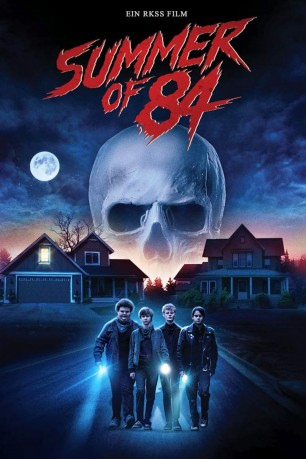
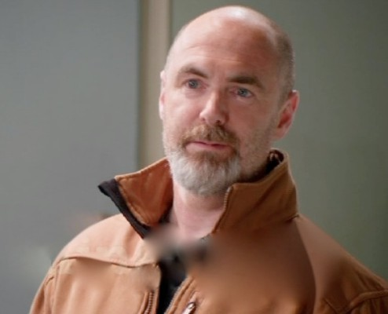

#9718 Summer of 84
 
 IMDB-Wertung: 6.7 / 10
IMDB-Wertung: 6.7 / 10  Metascore: 57
Metascore: 57 
Sommer 1984: Davey, Woody, Eats und Curtis sind die besten Freunde. Die Vier verbringen die Ferien gemeinsam und schlagen die Zeit in ihrem Baumhaus, an der örtlichen Bowlingbahn oder mit BMX-Fahren tot. Doch die makellose Vorstadtidylle beginnt zu zerfallen als plötzlich ein Serienkiller auftaucht, der in der Nachbarschaft sein Unwesen treibt und die Bewohner mit einer Reihe von Morden in Aufruhr versetzt. Die vier Jungs haben schnell einen Verdächtigen gefunden: Den alleinstehenden Polizisten Wayne Mackey. Kurzerhand beschließen sie, auf eigene Faust gegen ihn zu ermitteln und den Schlächter von Cape May zur Strecke zu bringen. Ein gefährliches Spiel um Leben und Tod nimmt seinen Lauf...
Jahr: 2018
Dauer: 105 Minuten
FSK: 16
Land: Kanada Studio: Pandastorm PicturesTonspuren: DTS - ,
Untertitel: Deutsch, Englisch,
Auflösung: 1080p (1920x800) Größe: 10752 MB
Genre: Thriller, Horror, Drama, Mystery
Regisseur: François Simard, Anouk Whissell, Yoann-Karl Whissell
Drehbuch: Matt Leslie, Stephen J. Smith
Soundtrack: Jean-Philippe Bernier, Jean-Nicolas Leupi, Le Matos
Darsteller:
- Graham Verchere als Davey Armstrong
 Judah Lewis als Tommy 'Eats' Eaton
Judah Lewis als Tommy 'Eats' Eaton Caleb Emery als Dale 'Woody' Woodworth
Caleb Emery als Dale 'Woody' Woodworth- Cory Gruter-Andrew als Curtis Farraday
- Tiera Skovbye als Nikki Kaszuba
 Rich Sommer als Wayne Mackey
Rich Sommer als Wayne Mackey Jason Gray-Stanford als Randall Armstrong
Jason Gray-Stanford als Randall Armstrong- Shauna Johannesen als Sheila Armstrong
-  William MacDonald als Sheriff Caldwell
- Harrison Houde als Bobby Coker
- Aren Buchholz als Kyle
- Susie Castillo als Brenda Woodworth
- Jaiven Natt als Young Kid
- Patrick Keating als Fisherman
- Patrick Lubczyk als Teenage Boy
- Jordan Buhat als Dorky Customer
 Mark Brandon als Local News Anchor
Mark Brandon als Local News Anchor- Reilly Jacob als Dusty Dewitt
- J. Alex Brinson als Officer Cole
- Shahrokh Ferdowsi als Police Detective
Datei: X:\2018(N-Z)\Summer of 84 (2018, FSK16, 1920x800).mkv seit 10.10.2018
Festplatte: HD 2018(G-Z)-2019(A-Z)
 Es gibt insgesamt 172 Filme in der Gruppe '2018(N-Z)'
Es gibt insgesamt 172 Filme in der Gruppe '2018(N-Z)'